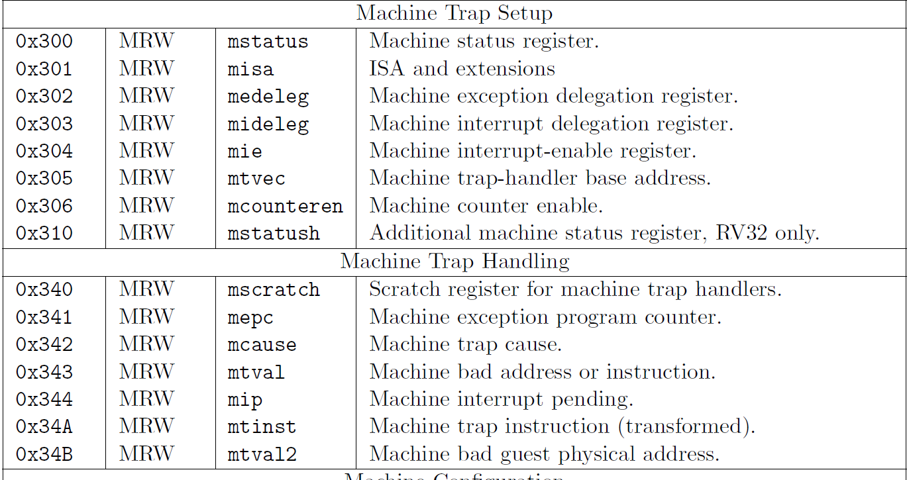
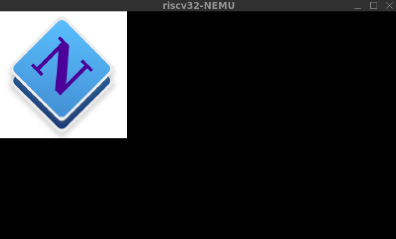
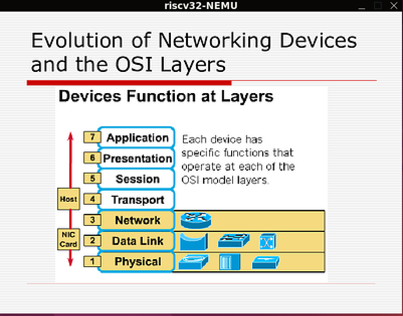
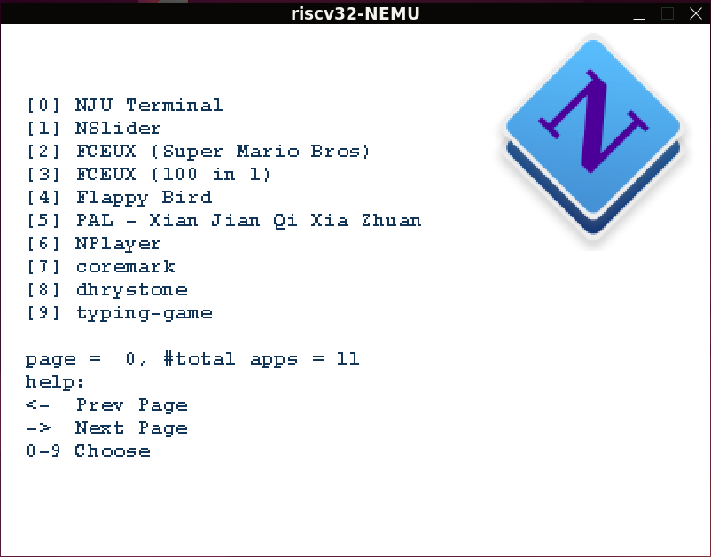
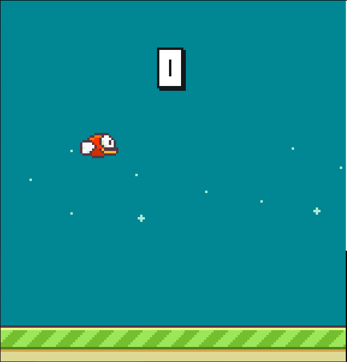
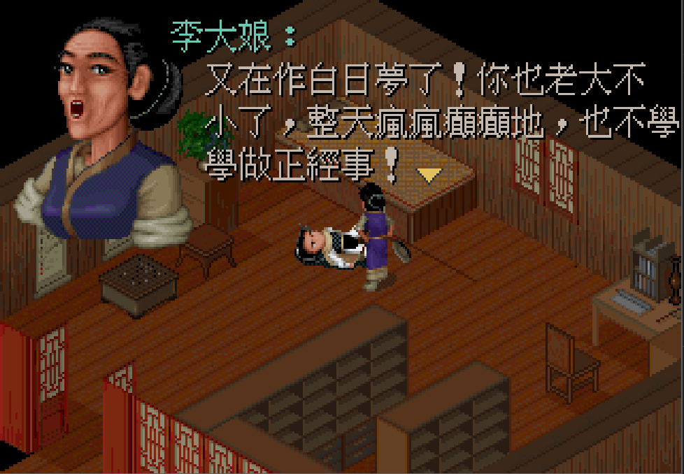
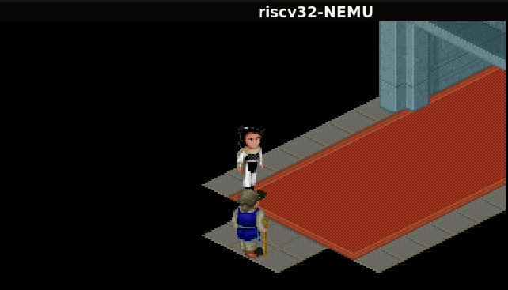
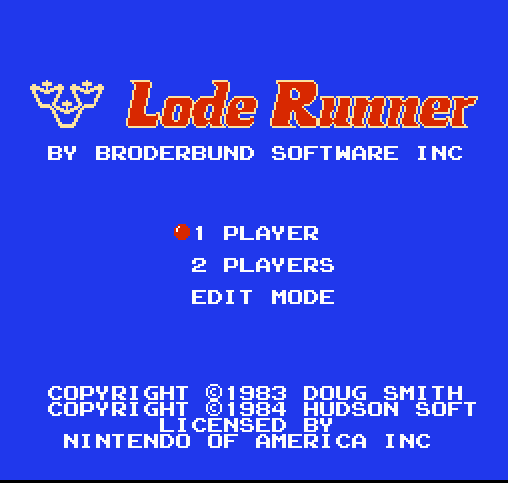
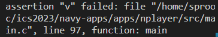

记录一下pa的完成过程。前面的pa1和pa2没有记录，等以后有机会二刷再补上吧。
PA3-1
PA3的第一阶段是实现异常响应机制。为实现异常响应，需要添加几个特殊寄存器，称为控制和状态寄存器（CSR）。PA中需要用到的包括：
| CSR | 功能 |
|---|---|
| mepc | 存放触发异常的PC |
| mcause | 存放触发异常的原因 |
| mstatus | 存放处理器的状态 |
| mtvec | 存放异常入口地址 |
触发异常前，需要调用cte_init()函数进行初始化，将异常入口地址存到mtvec寄存器中，并注册一个事件处理回调函数，当触发异常时，将会以上下文信息和信息为参数调用此回调函数，执行异常处理操作。
RISCV32通过ecall指令触发自陷。具体来说，ecall指令执行的操作为：
- CSR[mepc] <- pc
- CSR[mcause] <- 异常号
- PC <- CSR[mtvec] （执行异常响应程序）
完成异常响应程序后，恢复上下文信息，通过mret指令将PC从mepc中恢复（并+4），从中断处继续执行。
大致理解机制之后，再RTFM和RTFSC之后就可以敲代码了。
首先是在代码中添加寄存器，直接加一个数组就好：
1 | typedef struct { |
接下来实现csrr和cswr指令，实现CSR的读写。这两条指令是通过I类指令的立即数来指代某一个CSR的，通过RTFM可以找到找到寄存器对应的代码。

方便起见，写一个函数将代码做个映射：1
2
3
4
5
6
7
8
9
10
11
12
13
14
15
16static inline int checkCSR(int gr) {
switch (gr)
{
case 0x342: //mcause
return 0;
case 0x300: //mstatus
return 1;
case 0x341: //mepc
return 2;
case 0x305: //mtvec
return 3;
default:
panic("Unknow csr %x", gr);
return -1;
}
}
再定义一个宏来访问对应的寄存器，这样就能很方便的查找CSR了。1
实现指令就是直接抄手册了：1
2INSTPAT("??????? ????? ????? 001 ????? 11100 11", csrrw , I, word_t t = CSRs(imm); CSRs(imm) = src1; R(rd) = t);
INSTPAT("??????? ????? ????? 010 ????? 11100 11", csrrs , I, word_t t = CSRs(imm); CSRs(imm) = (t | src1); R(rd) = t);
接下来实现ecall指令。ecall的操作在isa_raise_intr()函数里实现，按要求写就行，没啥别的。
1 | word_t isa_raise_intr(word_t NO, vaddr_t epc) { |
函数的实现很简单，主要问题是参数NO从哪来？查手册发现riscv自陷Exception Code是11, 所以ecall指令的操作就是以11和PC值为参数调用isa_raise_intr()，再将函数返回值赋值给s->dnpc就可以了。
最后mret指令就更容易了，置PC就行。1
2INSTPAT("0000000 00000 00000 000 00000 11100 11", ecall , I, s->dnpc = isa_raise_intr(11, s->pc));
INSTPAT("0011000 00010 00000 000 00000 11100 11", mret , R, s->dnpc = CSRs(0x341) + 4);
再此尝试运行yield test，得到错误输出“Unhandled event”。发现是在注册的回调函数simple_trap()中，事件编号错误。想了很久才发现原因：
执行ecall之后会跳转到__am_asm_trap函数，这个函数是用汇编写的，定义在trap.S中。此函数会保存上下文信息，然后跳转到__am_irq_handle()函数，这个函数参数为刚才保存的上下文信息Context，包含通用寄存器和CSR的值。它将根据mcause的值设置事件编号，并调用回调函数。默认时事件编号都会被设置为EVENT_ERROR，肯定会发生错误，所以添加一条case，mcause为11时事件编号设为EVENT_YIELD，这样一来理论上应该就没问题了。
然而还是出错了。。。
再是一番冥思苦想，发现am_asm_trap里一串代码：1
2
3#define OFFSET_CAUSE ((NR_REGS + 0) * XLEN)
#define OFFSET_STATUS ((NR_REGS + 1) * XLEN)
#define OFFSET_EPC ((NR_REGS + 2) * XLEN)
这几个宏定义的是设置参数Context时三个寄存器在栈中的位移，按顺序应该是mcause, mstatus, mepc，并且都是更在32个通用寄存器后面。但Context结构体却是这样的：1
2
3
4
5struct Context {
// TODO: fix the order of these members to match trap.S
uintptr_t mcause, mstatus, gpr[NR_REGS], mepc;
void *pdir;
};
明显顺序有误，应该调整一下顺序。改完之后yield test就通了。
写到这里我真的心情复杂，这么难发现的坑怎么不再文档里面说？？气愤之时继续往下做，突然发现后面文档里面有写要调整结构体顺序。。。原来是我没看完文档，只看了第一部分就开始做，结果绕了大弯。而且糊里糊涂地把后面的内容都做完了。。。不过虽然走了弯路耗时长了一点，但相应的理解也更深刻了。算是吸取个教训，以后要看完文档再动手。
最后的etrace轻松完成，至此第一阶段完成，耗时4小时。（大部分时间在走弯路。。。）
必答题- 理解上下文结构体的前世今生
你会在
__am_irq_handle()中看到有一个上下文结构指针c,c指向的上下文结构究竟在哪里? 这个上下文结构又是怎么来的? 具体地, 这个上下文结构有很多成员, 每一个成员究竟在哪里赋值的?$ISA-nemu.h,trap.S, 上述讲义文字, 以及你刚刚在NEMU中实现的新指令, 这四部分内容又有什么联系?
上下文结构体在__am_asm_trap()函数的调用栈中。阅读trap.S的代码可以知道，32个通用寄存器、三个CSR依次被压入栈中，依次完成Context结构体的赋值。之后作为参数传入__am_irq_handle()函数。
必答题 - 理解穿越时空的旅程
从
yield test调用yield()开始, 到从yield()返回的期间, 这一趟旅程具体经历了什么? 软(AM,yield test)硬(NEMU)件是如何相互协助来完成这趟旅程的? 你需要解释这一过程中的每一处细节, 包括涉及的每一行汇编代码/C代码的行为, 尤其是一些比较关键的指令/变量. 事实上, 上文的必答题”理解上下文结构体的前世今生”已经涵盖了这趟旅程中的一部分, 你可以把它的回答包含进来.
yield test中，首先调用cte_init()进行初始化，具体操作为：
1、将__am_asm_trap()函数的地址存在mtvec寄存器中。
2、注册回调函数simple_trap。
然后进入hello_intr()函数，输出一些信息。然后进入循环调用yield()函数。yield()函数使用内联汇编”li a7 -1”指令将异常号存在a7中，然后执行指令ecall。ecall指令依次完成一下操作：
1、CSR[mepc] <- pc
2、CSR[mcause] <- a7
3、PC <- CSR[mtvec]
这时PC将会指向__am_asm_trap函数并执行。此函数首先会将32个通用寄存器、3个CSR的值压入栈中，构成Context结构体c，将该结构体作为参数调用__am_irq_handle()函数。此函数会定义一个Event结构体，根据c中储存有的mcause值，设置Event结构体的事件编号，再以Context和Event两个结构体为参数调用之前注册的回调函数simple_trap()。此函数会根据Event结构体中的事件编号识别事件，做出相应的输出。由于循环很大，程序会不断输出y，之后退出异常响应是否正确实现不得而知。
PA3-2
PA3第二阶段主要是引入操作系统nanos-lite，实现操作系统加载用户程序和系统调用。目前nanos-lite的功能很简陋，大概看一下main.c就大致明白它的工作流程了：初始化设备和存储器，加载程序，最后触发yield自陷。
我们的第一个任务时使操作系统能加载程序，即实现loader()。这里的程序指的是ELF文件，它存放在硬盘(ramdisk.img)。我们需要解析ELF文件，并将其加载到运行时内存。解析ELF可以按照以下流程：
读取ELF头，根据魔数e_ident检查是否为ELF文件。
从ELF头获取程序头program header的位移e_phoff和程序头的数量e_phnum。
- 逐个读取程序头，判断其类型是否为PT_LOAD。
- 若是，将该节加载到内存。加载的地址、长度都包含在程序头里面了。
- 完成加载，loader()函数返回程序入口e_entry。
1 | static uintptr_t loader(PCB *pcb, const char *filename) { |
然后在init_proc()里调用naive_uload()，naive_uload()会加载硬盘中的程序，并获取入口地址，跳转到入口地址执行。这样操作系统就能够加载用户程序并执行了。
接下来编译并在nanos运行dummy。第一次编译dummy可能需要重启ternimal，应该刚配置的NAVY_HOME环境变量还没生效，Makefile还无法识别。
dummy程序会触发系统调用。触发系统调用和上一阶段实现的自陷都是用ecall指令实现的，如何区分它们？阅读源码可知，系统调用前会往GPR1(a7)里面填入type，yield()在ecall之前也会往a7里填入-1。因此，我们可以根据a7里的值区分EVENT_YIELD和EVENT_SYSCALL。而寄存器内容都保存在上下文信息c里面了，我们很容易读取。因此，修改cte.c内代码如下：
1 | Context* __am_irq_handle(Context *c) { |
确定事件类型之后会调用注册的回调函数。在nanos中为do_event()。这里做点简单判断就行了，如果是EVENT_SYSCALL就交给do_syscall()处理。
1 | static Context* do_event(Event e, Context* c) { |
系统调用也有不同的类型。在do_syscall里，我们只需要根据GPR1识别系统调用类型，然后把任务分配给给个sys_xxx()函数实现系统调用即可。实现sys_yield和sys_exit，dummy就可以通了。
1 | static void sys_yield(Context *c) { |
接下来实现标准输出sys_write，这里按照手册写就可以。
1 | static void sys_write(Context *c) { |
另外，我们还需要给用户程序提供标准输入的接口_write()，把系统调用抽象成一个屏蔽底层细节的接口。其实将系统调用做个封装。
1 | int _write(int fd, void *buf, size_t count) { |
最后是实现堆区管理。这里的用户接口是_sbrk(int increment)，参数是请求分配的长度。它负责维护program break，即当前堆区终点。其工作方式如下：
- 将program break初始化到end位置。
- 被调用时，计算新的program break = program_bread + increment。
- 通过SYS_brk向操作系统请求分配到新program break的堆空间。
- 若系统调用返回0，分配成功，更新program break，并将旧program break的值作为返回值返回。
- 若失败，返回-1。
这里end的使用方法需要查手册。end是一个被放在程序数据段结尾的字符，&end可以读出它的地址，即数据段结尾地址，也就是堆区起点。实现如下：
1 | extern char end; |
此时运行hello就可以顺利输出字符串了。
PA3-2 over!
必答题 - hello程序是什么, 它从而何来, 要到哪里去
我们知道
navy-apps/tests/hello/hello.c只是一个C源文件, 它会被编译链接成一个ELF文件. 那么, hello程序一开始在哪里? 它是怎么出现内存中的? 为什么会出现在目前的内存位置? 它的第一条指令在哪里? 究竟是怎么执行到它的第一条指令的? hello程序在不断地打印字符串, 每一个字符又是经历了什么才会最终出现在终端上?
hello被编译成ELF文件后，我们将它放进了硬盘(ramdisk.img)里，然后nanos在执行到init_proc()时，调用naive_uload()，naive_uload()又调用loader()加载ramdisk.img里面的hello程序。loader()会依次读取hello的ELF头和program header，根据从program header获取需要加载的内容在ELF中的位置、要加载到的内存位置、需加载的文件长度等信息，根据这些信息将程序加载到内存空间。它的第一条指令由ELF头的e_entry指示，它是loader函数的返回值。naive_uload获取到入口地址之后就跳转到第一条指令开始执行。
hello通过printf()输出字符串。printf在经过一系列逻辑处理之后，通过标准输出的用户接口_write()。这个函数会将参数储存在规定的寄存器中，然后触发SYS_write的系统调用。当程序运行到ecall时，跳转到中断响应程序。识别事件类型为系统调用后，交给nanos注册的回调函数do_event处理。do_event识别系统调用类型为SYS_write，调用sys_write，最后通过putch一个个输出字符。
PA3-3
简易文件系统
下面在nanos里实现一个简易文件系统。PA中的硬盘是用ramdisk.img这个文件模拟的。每次更新navy-apps中的内容并编译更新之后，更新的文件会被载入到ramdisk.img文件中，同时更新文件记录表ramdisk.h。需要读取某一个文件时，只需要查这个表，获得所需文件在ramdisk.img内的位置和长度，然后读取文件即可。框架代码已经实现了部分功能，我们只需要实现以下四个函数即可：
1 | int fs_open(const char *pathname, int flags, int mode); |
这些函数在c语言中都有原型，可以通过手册查看它们的功能。
首先是fs_open。我们可以无视flags和mode，只关注文件名pathname即可。这个函数需要在文件目录内查找匹配文件名，然后返回文件描述符。这里文件描述符直接用文件记录表中的下标，之后读写文件就可以用这个下标来访问文件了。
实现另外几个函数之前，先给Finfo结构体增加一个成员变量open_offset，用于记录此文件的目前操作位置。每次读写几个字节，open_offset就增加多少，这样下次读写文件就可以直接从上次的末尾继续了。
fs_read()和fs_write()的实现类似。首先，为防止操作越过文件边界，确定最大文件读写长度，为文件大小-open_offset和参数len的较小值。然后通过ramdisk_read()和ramdisk_write()对文件进行读写。最后修改open_offset。
另外，stdin, stdout, stderr是虚拟的文件，ramdisk内不存在并没有它们，所以对它们读写需要特殊操作。我们只需要处理stdout和stderr的写入。注意到，Finfo结构体有两个函数变量read和write。普通文件的这两个变量为空，它们应该用正常方式读写。特殊文件这两个变量不为空时，需要用这两个函数读写。stdout和stderr的写入就是将字符输出到串口。所以我们需要实现device.c中的serial_write()，通过putch把buf存储的字符串一个个输出来。然后修改file_table，把stdin和stdout的write函数修改成serial_write。最后还要在fs_read()和fs_write()里做个判断，如果存在特殊读写函数，调用读写函数；否则，按普通方式读写文件。
最后实现fs_leek()。这个函数将open_offset移动到指定为止。根据whence，有三种不同的偏移方式：
- SEEK_SET：从文件头开始偏移，open_offset = offset
- SEEK_CUR：从当前位置开始偏移，open_offset += offset
- SEEK_END：从文件末尾开始偏移，open_offset = file_size + offset （此时offset一般为负数；offset为0可读取文件长度）
最后还要检查是否超出文件边界。
1 | int fs_open(const char *pathname, int flags, int mode) { |
接下来在Navy和Nanos的syscall.c里添加相应的系统调用，就可以通过file_test了。
之前实现的loader默认要执行的程序放在文件开头，现在有了文件系统，就可以通过文件名找到程序在文件中的位置了。实现很简单，在loader函数中，先用fs_open打开文件，获取文件描述符fd，下面用fs_read(fd, …)操作就行了。完成之后，修改proc.c的init_proc()函数，调用naive_uload()时第二个参数改为“/bin/file-test”，就可以将要执行的文件名传给loader了。
1 | // load program here |
然后在Navy的Makefile内，test后加上file-test，update，run，运行测试。PASS！
操作系统之上的IOE
时钟时输入设备，但一般通过一个单独的系统调用来获取时间，而不是抽象成文件。获取时间使用系统调用gettimeofday。下面实现此系统调用。sys_gettimeofday()函数需要用io_read()获取当前时刻，将当前时刻的秒和微秒写入一个结构体Timeval。PA2实现的ioe忘记怎么用了，重温~/ics2023/abstract-machine/am/src/platform/nemu/ioe/。
1 | static void sys_gettimeofday(Context *c) { |
然后添加系统调用。下面实现NDL_GetTicks()。
1 | uint32_t NDL_GetTicks() { |
另一个ioe是键盘。操作系统要向用户程序传递键盘信息，首先要规定信息的格式。我们使用简单的字符串
- 按下按键事件, 如
kd RETURN表示按下回车键 - 松开按键事件, 如
ku A表示松开A键
用户程序通过系统调用请求键盘信息时，操作系统直接将上述字符串填入buf，传给用户程序。这样，用户程序就可以像读取文件一样读取键盘信息了。所以，把键盘抽象成一个虚拟文件/dev/events，并用函数events_read()来读取信息。在file_table添加表项：
1 | {"/dev/events", 0, 0, events_read} // 不必实现lseek，位移和大小都是0就行 |
接下来需要实现events_read()。用io_read(AM_INPUT_KEYBRD)读取键盘信息，然后写入字符串。这里我为了防止字符串长度超出限制，先填入另一个字符串，确定长度之后再写入buf。或许有点过分谨慎了。。。而且应该用sprintf更优雅，但是懒得改了。最后在字符串末尾填0，不然后续问题很麻烦。
1 | size_t events_read(void *buf, size_t offset, size_t len) { |
NDL_PollEvent()就很简单了，用读文件的方式读取键盘就可以了。返回值需要注意一下。
1 | int NDL_PollEvent(char *buf, int len) { |
最后是VGA。我们需要添加两个虚拟文件：显存(fb)和屏幕尺寸信息(dispinfo)，并使用特殊写入函数
1 | {"/dev/fb", 0, 0, invalid_read, fb_write}, |
跟键盘信息一样，屏幕信息也用字符串表示，例如：
1 | WIDTH : 400 |
所以，dispinfo_read()要做的就是把读取屏幕信息，并把字符串填入buf。另外，由于下面实现fb_write()需要屏幕长宽信息，所以在dispinfo_read()读取屏幕长宽之后，我顺便把它们存起来，方便后面使用。
1 | static uint32_t screen_w = 0, screen_h = 0; |
然后是显存。由于它需要支持lseek，但我们无法在编写代码时确定文件大小（即屏幕大小），需要在inif_fs()中初始化显存大小：
1 | // TODO: initialize the size of /dev/fb |
接下来是实现fb_write()，需要调用io_write(AM_GPU_FBDRAW, …)写入显存。由于fb_write()只知道写入的起始位置和长度，不知道应该在何处换行，因此虽然io_write(AM_GPU_FBDRAW, …)能同时填充多行的矩形，fb_write()一次调用也只能填充一行。在dispinfo_read()被调用时已经保存了屏幕长宽，再根据offset就可以计算出写入的起始坐标了。因为只能写一行，填入矩形的宽为len，高为1。
1 | size_t fb_write(const void *buf, size_t offset, size_t len) { |
准备好了操作系统写入显存的功能，就可以实现NDL的一些图像函数了。在NDL中，我们也需要直到屏幕的尺寸，所以可以在NDL_init()里首先从/proc/dispinfo文件读出屏幕信息并记录在全局变量screen_w和screen_h中。
1 | int NDL_Init(uint32_t flags) { |
NDL_OpenCanvas()只需要记录画布大小即可。查阅API手册，发现若NDL_OpenCanvas()传入的参数w, h都指向0，需要分别修改为屏幕长和高，即让画布占满屏幕。否则将画布长和高设为w和h，并将画布长和高记录在全局变量canvas_w和canvas_h里。
1 | void NDL_OpenCanvas(int *w, int *h) { |
写下来是NDL_DrawRect()。它需要把一个颜色信息填充到指定位置的矩形矩形。由于上面实现的写入显存只能逐行写入，这里也需要逐行填充。先打开显存文件/dev/fb，写入每一行前，先用lseek把文件指针移动到此行要写入的第一个像素点处，再写入一行的信息。同样需要注意一单位为四字节。
1 | void NDL_DrawRect(uint32_t *pixels, int x, int y, int w, int h) { |
运行bmp-test可以看到屏幕上显示Logo。

更丰富的运行时环境
PA3剩下的部分基本是去运行一些应用程序了。很多应用程序都会调用SDL库，而SDL库大部分函数都没有实现。为了防止程序运行时用到了某个没有实现的函数还傻傻没发现，我们先在每个未实现函数中加一句assert(0)。若程序调用某个未实现函数，程序就会立即停止，我们就很容易找到它了。
nemu没有实现浮点数运算，但是可以用定点算数来进行实数运算。这是一种不同于IEEE754的一种及其简单的32位实数表示法。简单来说就是前24位是整数位，后8位是小数位。这种表示法的实数做加减法运算只需要将它当场整数运算就行。做乘法需要相乘后右移八位，做除法需要相除后左移八位。这样一来，即使硬件不支持实数运算，也可以用软件来实现了。这里只涉及一些简单的数学推导，难度不大。
1 | /* Multiplies a fixedpt number with an integer, returns the result. */ |
Navy中的应用程序
尝试在Nanos中运行NSlider播放幻灯片。需要实现void SDL_UpdateRect(SDL_Surface *s, int x, int y, int w, int h)。先看它的参数，s是一个SDL_Surface结构体，包含了一帧画面信息。其变量w, h是画布长和高，pixels数组是每个像素点的颜色，按行优先排列。其实SDL_UpdateRect()和NDL_DrawRect()实现的功能基本相同。只是SDL_UpdateRect()的参数s中包含了整个屏幕的颜色信息，而NDL_DrawRect()的参数pixels只含有需要填充的矩形的颜色信息。故SDL_UpdateRect()只需要将从s->pexels中提取中需要填充的矩形的颜色信息，再调用NDL_DrawRect()就可以了。
1 | void SDL_UpdateRect(SDL_Surface *s, int x, int y, int w, int h) { |
另一个要实现的SDL函数是 SDL_WaitEvent()。这个函数不停通过NDL_PollEvent()读取键盘信息，直到读取到键盘按下或弹起，然后根据读入字符串的第2位是’d’还是’u’来判断是键盘按下还是弹起，再把字符串第4位起的子字符串与keyname中的按键名称逐一比对，确定按键。将按键信息存入传入的结构体指针，再返回1。实现了这个函数就可以通过按键给幻灯片翻页了。
1 | int SDL_WaitEvent(SDL_Event *event) { |
之后可以将导入的PDF转化成幻灯片显示出来了。运行convert.sh前需要先sudo apt install imagemagick，安装ImageMagick。运行nslider就可以看到幻灯片了。还能通过up和down键翻页。

下一个应用程序是开机菜单Menu。需要实现两个SDL函数：SDL_BlitSurface()和SDL_FillRect()。
SDL_BlitSurface():将一张画布中的指定矩形区域复制到另一张画布的指定位置。首先需要确定源矩形和目标矩形的位置，以及矩形大小。需要分别考虑srcrect和dstrect分别为空和非空的情况。按以下规定来确定。
- 规定符号 w: 画布宽 h: 画布高 (sx, sy): 源矩形位置坐标 (dx, dy): 目标矩形位置坐标
- srcrect不为空时， 按srcrect设置w, h, sx, sy；
- srcrect为空时，(sx, xy) = (0, 0)，w, h设为src的w, h(画布的宽和高)，即整个画布；
- dstrect不为空时，按dstrect设置dx, dy；
- dstrect为空时，(dx, dy) = (0, 0)。
之后将src->pixels的内容复制到dst->pixels对应位置就可以了。
1 | void SDL_BlitSurface(SDL_Surface *src, SDL_Rect *srcrect, SDL_Surface *dst, |
SDL_FillRect()往画布的指定矩形区域中填充指定的颜色。同样要处理dstrect为空和非空的情况，方法和SDL_BlitSurface相同。
1 | void SDL_FillRect(SDL_Surface *dst, SDL_Rect *dstrect, uint32_t color) { |
运行Menu可以看到菜单界面。

下一个应用程序Nterm，一个简易终端。需要实现两个SDL函数SDL_GetTicks()和SDL_PollEvent()。
SDL_GetTicks()直接返回NDL_GetTicks()就行了，两者功能完全相同。
SDL_PollEvent()和SDL_WaitEvent()相似，只是SDL_WaitEvent()会不停读取键盘信息直到有事件发生，而SDL_PollEvent()只读取一次，若没有事件发生，直接返回。
1 | int SDL_PollEvent(SDL_Event *ev) { |
下面运行一个游戏Flappy Bird。需要实现IMF-Koad()，实现方式文件写得很清楚了：
- 用libc中的文件操作打开文件, 并获取文件大小size
- 申请一段大小为size的内存区间buf
- 将整个文件读取到buf中
- 将buf和size作为参数, 调用
STBIMG_LoadFromMemory(), 它会返回一个SDL_Surface结构的指针 - 关闭文件, 释放申请的内存
- 返回
SDL_Surface结构指针
代码如下：
1 | SDL_Surface* IMG_Load(const char *filename) { |
写好之后运行游戏。帧数有点低，但是能玩。

终于到PAL(仙剑奇侠传)啦！PAL不需要实现其它的函数，但是要增强一些SDL函数的功能，让它支持8位像素格式。其实只要增加一个条件判断：
1 | if(src->format->BitsPerPixel == 32) { |
具体实现内容基本一样。SDL_UpdateRect()在最后调用NDL_DrawRect()，传入的参数pixels必须是32位格式的，不然会显示错误颜色。因此需要现将8位颜色转为32位的，再填入pixels。s->format->palette->colors是一个SDL_Color类型的数组，以8位颜色为下标时可以获得其对应的SDL_Color，结构体包含rgba四个8位数字，再写一个函数将4个8位数字转化为一个32位数。
1 | static uint32_t color_translater(SDL_Color *c) { |
尝试运行PAL，发现assert(0)了。原来是SDL_GetKeyState()没有实现。这个函数需要返回一个指针，指向一个数组，这个数组实时反映按键的状态，若某个按键被按下，对应位置为1，否则为0。所以我们要维护一个数组，大小为按键数目。在SDL_PollEvent()或SDL_WaitEvent()发现按键按下时，将数组对应位置改为1，按键弹起时，重置为0。SDL_GetKsyState()直接返回这个数组地址。另外还要往参数numkeys指向位置写入按键的数量。
1 | uint8_t *SDL_GetKeyState(int *numkeys) { |
大功告成，可以运行PAL了。


接下来实现AM的API。首先是ioe_read()和ioe_write()。由于用户程序是跑在Nanos上的，它并不能直接调用AM的ioe_read和ioe_write，这是直接跑在Nemu上的Nanos的权限。所以用户程序需要通过系统调用实现ioe。用什么系统调用呢？当然是read和write，因为它们的本质都是读写文件，只要把ioe也当成文件就可以了。但ioe的设备寄存器有很多个，难道要为每个设备寄存器设置一个文件吗？其实有个方法，我们用文件指针来表示读取哪个寄存器。所有的ioe都抽象为同一个文件，用文件的open_offset区分具体指向哪一个ioe。用户程序打开这个文件后，将文件指针移动到reg位置上，再读写。操作系统处理读写时，就以open_offset判断读取哪个寄存器就可以了。
1 | // 文件记录表中添加表项 |
现在可以在nanos上运行am应用打字游戏了。
运行FCEUX不需要其它写另外的代码，但是有个坑。fceux的main函数在此处/home/sprooc/ics2023/fceux-am/src/drivers/sdl/sdl.cpp。RTFSC可以发现，如果定义了宏__NO_FILE_SYSTEM__，main函数有一个参数romname，表示要运行的游戏名称，但我们没法给main函数传参（或许有的，只是我实在搞不懂），所以romname是个空指针，后面会读取空指针导致错误。但是，如果我们不定义__NO_FILE_SYSTEM__，就会从argv里获取游戏名称，如果没有传入参数，使用默认的游戏路径，这样即使不传参也可以运行了。所以要取消掉宏定义__NO_FILE_SYSTEM__。加一句undef或修改Makefile都可以。下面是在Nanos打开的fceux界面。

下面实现运行Nplayer。由于我最后没有成功运行，所以不保证以下内容的正确性。
添加两个音频相关的设备文件：声卡的流缓冲区，声卡控制和状态：
1 | {"/dev/sb", 0, 0, invalid_read, sb_write}, |
然后实现它们的读写函数。sb_write()（名字有点不文雅，但它确实叫这名）调用ioe_write()写入流缓冲区，需要Area结构体参数，结构体包含start(写入内容起始地址), end(写入内容末尾地址)。在sb_write()填好这个结构体，调用ioe_write就行了。
1 | size_t sb_write(const void *buf, size_t offset, size_t len) { |
sbctl_write()往声卡的控制寄存器写入三个值：freq, channels, samples，它们会被依次放在buf后的12个字节。以它们为参数调用io_write(AM_AUDIO_CTRL, ...)就行了。stctl_write()要读取声卡流缓冲区的空闲字节数。AM_AUDIO_CONFIG和AM_AUDIO_STATUS分别存有流缓冲区的总容量和已写入字节数，它们的差值就是空闲字符数。
1 | size_t sbctl_read(void *buf, size_t offset, size_t len) { |
然后再NDL对这些音频文件的读写操作做个简单的封装。
1 | void NDL_OpenAudio(int freq, int channels, int samples) { |
接着在SDL做进一步封装。首先看SDL_OpenAudio()，这个函数需要从desired获取freq, channels, samples三个信息，使用它们初始化声卡设备。desired还有一个参数callback，这是一个用户程序注册回调函数，这个函数用于填充音频数据，需要由SDL定期调用它来获取音频数据，并将获得的数据写到声卡流缓冲区。这貌似要用多线程，因为在定期调用和其它代码的执行应该是并行的。使用多线程应该是正解，但在Navy里面实现太麻烦了，我们另辟蹊径。查看nplayer的代码，SDL_PauseAudio(0)之后音频开始播放，这之后SDL应该定期调用回调函数。同时nplayer进入一个循环，重复调用SDL_PollEvent(&ev)查询事件，直到音频播放完成。我们不如让SDL_PollEvent()调用回调函数，这样同样可以实现nplayer循环和SDL回调函数同时运行的效果。我们实现一个函数CallbackHelper()，维护一个计时器和音频播放状态。st为1时，播放，st为0时，停止播放。传入的参数flag用于修改st。flag为1时，st设为1；flag为0时，st设为0；flag为2时，不改变状态。因此开始播放时以1为参数调用它；SDL_PollEvent以2为参数调用，使其保持运行状态以定期调用回调函数；关闭音频时以0为参数调用。
1 | void CallbackHelper(int flag) { //1: start; 0: stop; 2: contunue |
实现好之后运行nplayer，却在音频解析的时候就错误了，跟自己实现的函数应该没有关系。我弄不清楚于是就放弃了。

基础设施(3)
这部分不太想写。。。
展示你的批处理系统
实现系统调用sys_execve:
1 | static void sys_execve(Context *c) { naive_uload(NULL, (const char *)c->GPR2); } |
再修改sys_exit，就可以使用开机菜单来选择要运行的程序了。
接下来尝试换成nterm。主要是实现nterm的sh_handle_cmd()函数。这里有点坑，命令字符串的末尾会有一个换行，如果直接用这个字符串作为文件名会因为多了个换行符无法匹配，所以要把换行符去掉。
1 | static void sh_handle_cmd(const char *cmd) { |
必答题 - 理解计算机系统
仙剑奇侠传究竟如何运行 运行仙剑奇侠传时会播放启动动画, 动画里仙鹤在群山中飞过. 这一动画是通过
navy-apps/apps/pal/repo/src/main.c中的PAL_SplashScreen()函数播放的. 阅读这一函数, 可以得知仙鹤的像素信息存放在数据文件mgo.mkf中. 请回答以下问题: 库函数, libos, Nanos-lite, AM, NEMU是如何相互协助, 来帮助仙剑奇侠传的代码从mgo.mkf文件中读出仙鹤的像素信息, 并且更新到屏幕上? 换一种PA的经典问法: 这个过程究竟经历了些什么? (Hint: 合理使用各种trace工具, 可以帮助你更容易地理解仙剑奇侠传的行为)
每一次更新画面，先从mgo.mkf中读取此帧的像素信息，用SDL_BlitSurface()等函数填充Surface的缓冲区，最后调用SDL_UpdateRect()更新画面。SDL_UpdateRect()读取相应信息之后调用NDL_DrawRect()，NDL_DrawRect()通过系统调用打开显存设备文件，往显存里面写入画面数据。用户程序最终会调用libos里的__syscall__()函数发起系统调用，然后转移到nanos执行。nanos通过fb_write()函数处理这个写入显存的操作。它会调用AM提供的接口io_write()往设备寄存器AM_GPU_FBDRAW写入数据。这段指令在机器代码中被会被翻译成往FB_ADDR这个地址里写入数据。当Nemu执行到这个写指令时，会发现这个地址映射到显存，故并不实际地往里面写数据，而是调用SDL库把画面显示到屏幕上。到此完成了更新屏幕画面的全过程。
PA3到此结束！